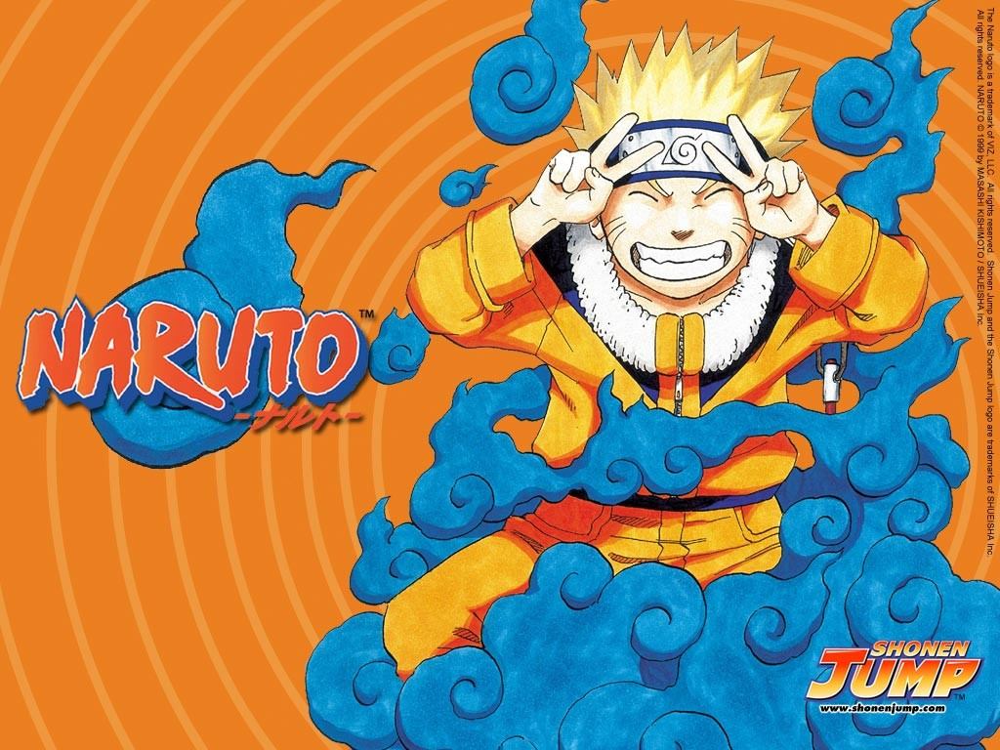
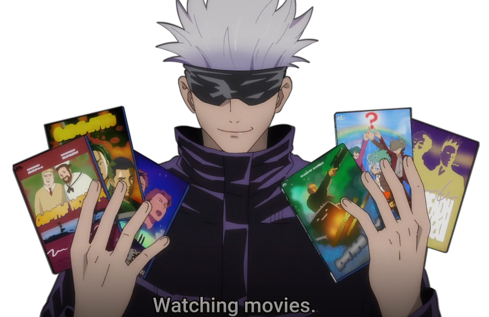

Ejercicio con Links, Listas e Imagenes
En este ejercicio metere doble imagen doble link y hare 2 listas diferentes
Peliculas favoritas
- Intertellar
- Pacific Rim
- Hail Mary
Series Favoritas
- Breaking Bad
- Brooklyn 99
- Clone wars
Imagen 1 con su cancion :]

Cancion del personaje
Ver en Youtube
Imagen 2 con su cancion [:

Cancion del personaje
Ver en Youtube